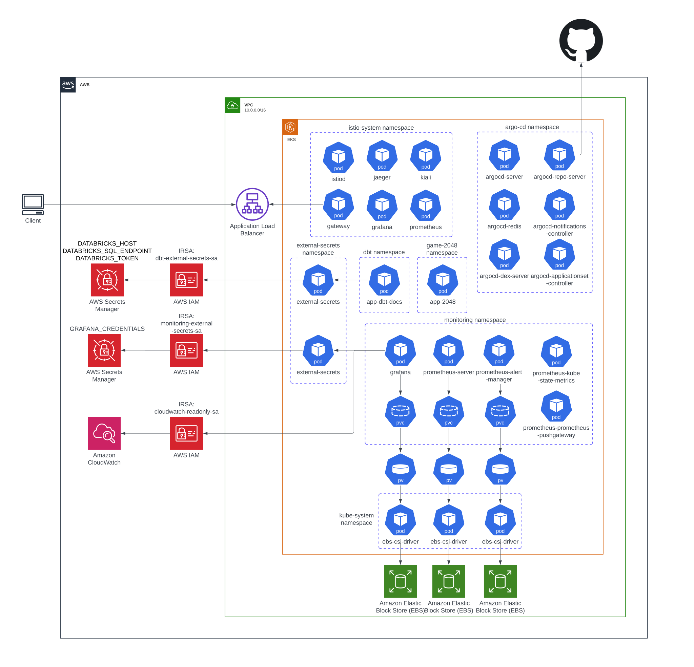

EKS wrapped in an Istio service mesh with mutual TLS, running the metrics stack, GitOps delivery, and the ML platform.

01
Architecture Decisions
Security
AWS Certificate Manager encrypts traffic from the client to the Application Load Balancer. A self-signed certificate encrypts traffic from the ALB to the Istio Gateway ingress. Inside the cluster, all traffic runs over Istio's built-in mutual TLS between services.
Metrics collecting
Prometheus scrapes metrics from Kubernetes, Grafana, Istio, and itself.
Alerting
Prometheus sends alerts to my Slack.
Storage
AWS EBS volumes attached to Grafana, Prometheus Server, and Prometheus Alertmanager.
Credentials
External Secrets retrieves Grafana admin credentials from AWS Secrets Manager.
Ingress
Root URLs changed for Grafana, Prometheus, Kiali, and Argo CD to kubernetes.patrick-cloud.com/{service}/:
Declarative, GitOps continuous-delivery tool for Kubernetes.
03
Services I Used
Istio
Istio is an open-source service mesh platform that helps manage, secure, and connect microservices. Reasons I used it:
Security capabilities — mutual TLS secures service-to-service communication across the mesh. Istio provides a key management system to automate key and certificate generation, distribution, and rotation, and is compatible with OpenID Connect providers like Auth0 and Google Auth so I can incorporate them later if needed.
Observability — Kiali gives a dashboard visualizing pods and services across the mesh.
Traffic management — the Gateway acts as ingress for all incoming traffic into the cluster. Istio's routing rules make it easy to control the flow of traffic and API calls between services, simplify configuration of circuit breakers, timeouts, and retries, and enable A/B testing, canary deployments, and percentage-based traffic splits.
Other solution looked at — Linkerd
Istio seemed the more all-inclusive and simpler solution. Linkerd did not support Ingresses like Istio did, and Istio egress was much simpler with Gateway and VirtualService objects compared to DNS and delegation tables. The big downside is that Istio is a much more heavyweight solution.
Prometheus & Grafana Stack
Prometheus collects metrics from infrastructure and applications and stores them in a time-series database. Reasons I used it:
Alerting — evaluates user-defined rules and sends alerts to channels including email, PagerDuty, and Slack, with deduplication, grouping, routing, silencing, and inhibition.
Service discovery — discovers targets automatically and monitors new service instances via Kubernetes service discovery, DNS, or file_sd.
Reliable metrics — collects time-series data from exporters or scrapes target systems directly.
Grafana is the visualization layer on top. Reasons I used it:
Database support — supports a wide range of databases; I'm using Prometheus, AWS Cloudwatch, and Postgres.
Monitoring — helps troubleshoot cluster issues down to individual pods or nodes.
Ease of use — a long list of pre-made dashboards importable from the most common data sources.
Other solution — Elastic Stack
With this project my focus isn't analyzing logs but analyzing metrics and visualizing real-time monitoring, so the Prometheus and Grafana stack was the easy choice.
Argo CD
Argo CD is a declarative, GitOps continuous-delivery tool for Kubernetes. Three reasons I used it:
Easy rollback — ArgoCD pulls changes and applies them to the cluster. If something breaks or a new application version fails to start, you can revert to the previous working state from git history.
User interface — a convenient web-based UI simplifies working with the tool.
Dynamic — works with any declarative configuration tool: YAML, Helm charts, Kustomize, and more.
Other solution — Flux
Argo CD having an easy-to-use UI was a big advantage versus no UI with Flux.
Other Considerations
ALB via Terraform vs. AWS Load Balancer Controller
Can use the ALB as the center point to all my services (EKS + EC2)
Customize the ALB for security (least privilege)
Downside: I have to figure out the port exposed by the Istio Gateway and configure it with the ALB and security groups
External Secrets vs. AWS Secrets Store CSI Driver
The AWS CSI driver was limited to injecting secrets into pods; I wanted to inject secrets into manifest files
External Secrets stores the secret in the Kubernetes Secrets resource, making it very accessible